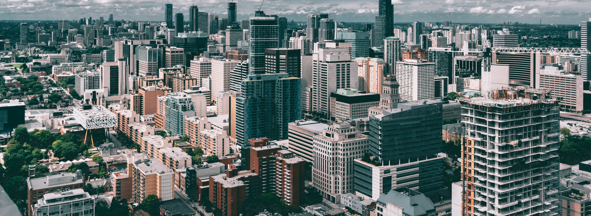

A construction site is an area or piece of land on which construction works are being carried out.
The term ‘building site’ is often used interchangeably with construction site, although this tends to indicate that buildings (and sometimes, more specifically, housing) are being constructed, whereas the term ‘construction site’ can refer to all types of works, such as road construction, sewer construction, landscaping, and so on.
Alternative Materials
Modern House Materials
Glass
Color or Lack of Color
Consistency and Contrast
Modern Vernacular Home design
Fabric Building or Object Building
Passive House Design
Sustainable House Design
Smart Home Technology


Kinetic Architecture & Automated Systems
Commercial Products and Features
Modern Roof Decks
Connecting Indoor and Outdoor Spaces
Open Plan
Double Height Living Room
Open Kitchen Design
Modern Kitchens and Bathrooms
Details
Home Gardens
Build Well
tucco, Traditional Stucco or Synthetic Stucco
Modern Fiber Cement Siding
Fiber Cement Panels
Stone used in a modern way
Modern Bricks, Recycled bricks can actually be quite modern with a contrasting look
Fiberglass Panels or FRP
GFRC Glass Fiber Reinforced Concrete
Exposed Concrete, pored in place or precast concrete
Metal panels, steel, aluminum, titanium, zinc, etc…
Glass Walls, store front or curtain wall

OUR PROCESSING PROJECT
Architectural Design
Architects break the design process into 5 Phases of Design.
Schematic Design
Design development
Construction Documents
Bidding
Construction administration
Some people will care about this some wont. You may be interested in finding out if the architect is a small firm or a large firm some people are particular about these things. If you are working with a big firm you should find out who will be handling your project.
There are many different types of firms you should ask what type of work they normally do.